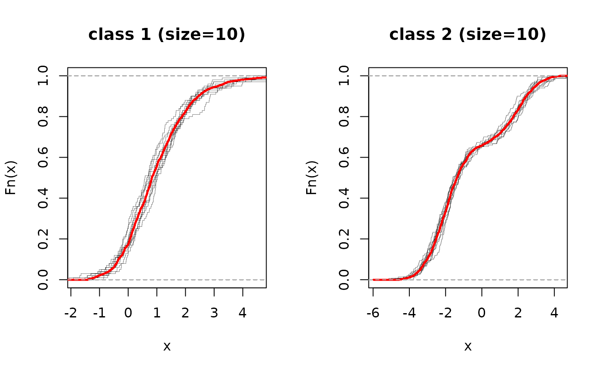

EP-means is a variant of k-means algorithm adapted to cluster multiple empirical cumulative distribution functions under metric structure induced by Earth Mover's Distance.
epmeans(elist, k = 2)
| elist | a length \(N\) list of either vector or |
|---|---|
| k | the number of clusters. |
a named list containing
an integer vector indicating the cluster to which each ecdf is allocated.
a length \(k\) list of centroid ecdf objects.
Henderson K, Gallagher B, Eliassi-Rad T (2015). “EP-MEANS: an efficient nonparametric clustering of empirical probability distributions.” In Proceedings of the 30th Annual ACM Symposium on Applied Computing - SAC '15, 893--900. ISBN 978-1-4503-3196-8, doi: 10.1145/2695664.2695860 .
# \donttest{ ## two sets of 1d samples, 10 each and add some noise # set 1 : mixture of two gaussians # set 2 : single gamma distribution # generate data elist = list() for (i in 1:10){ elist[[i]] = stats::ecdf(c(rnorm(100, mean=-2), rnorm(50, mean=2))) } for (j in 11:20){ elist[[j]] = stats::ecdf(rgamma(100,1) + rnorm(100, sd=sqrt(0.5))) } # run EP-means with k clusters # change the value below to see different settings myk = 2 epout = epmeans(elist, k=myk) # visualize opar = par(no.readonly=TRUE) par(mfrow=c(1,myk)) for (k in 1:myk){ idk = which(epout$cluster==k) for (i in 1:length(idk)){ if (i<2){ pm = paste("class ",k," (size=",length(idk),")",sep="") plot(elist[[idk[i]]], verticals=TRUE, lwd=0.25, do.points=FALSE, main=pm) } else { plot(elist[[idk[i]]], add=TRUE, verticals=TRUE, lwd=0.25, do.points=FALSE) } plot(epout$centers[[k]], add=TRUE, verticals=TRUE, lwd=2, col="red", do.points=FALSE) } }